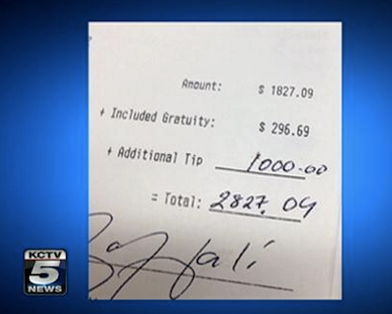

小费，一个尴尬的话题，一般是中国人来到美国之后第一个不习惯的文化现象。在中国，吃饭理发等活动是不需要付小费的，而在美国，付小费貌似服务行业一种必须的事情。在美国的饭店吃饭，一般人会付至少 15% 的小费给服务员。
初到美国的中国人一般比较小气，想方设法省钱，当然也想在小费上省钱。有些人去饭店吃饭，不管别人服务如何周到如何有礼貌，都只付不到 15% 甚至少于 10% 的小费，吃饭之后总是有做贼一样逃之夭夭的感觉。
后来这些人发现了，苛扣小费的做法是损害中国人在美的社会形象的，所以很多人变得“大方”起来。有些人去饭店吃饭，不管服务如何都给 20% 甚至以上的小费，就算服务员不够尊重，甚至态度恶劣也一样，还生怕得罪了他们似的。殊不知，给小费太多，或者小费比例大于服务质量，不仅损害了中国人的尊严和形象，而且对社会有危害。下面我就谈谈自己的看法。
其实从理论上讲，付小费这习惯是美国社会的一种历史遗留陋习。美国餐馆雇佣服务员，只付给他们非常低的工资，以至于服务人员必须用客人付的小费来维持生活。餐馆本来应该给服务员足够的工资却没有给，到头来这负担却摊到顾客身上，不付小费还觉得自己有罪似的，这就是美国的歪理。小费的习俗使得美国服务员变得势利，以貌取人。服务员的态度，经常取决于“他认为”你吃完之后会给多少小费，即使你平时给小费很大方也无济于事。顾客与服务员之间这种不清不楚的猜测关系，搞得跟中国人吃完饭讨论该谁付账时一样难受。
在社会文明的某些方面更加先进的英国和欧洲其它国家，基本不用给小费，而且给小费被视为对服务人员的侮辱（人家的工资不低）。所以就跟美国人仍然使用落后的英制单位（英里，英寸，加伦，盎司，华氏度…）一样，小费并不是什么“高大上”的社会现象。相反，这是社会制度落后，社会福利不好，贫富分化剧烈的表现 。所以作为一个从具有更先进的文明来的人，付小费真的只是为了施舍，为了怜惜这些美国社会底层的服务业工作者。不仅是坐下来吃饭的餐厅，美国的很多快餐店咖啡店会在收款员柜台上放一个小筐子用来收小费，搞得就像是街上乞讨的一样。很多英国人在美国不付小费，甚至对此强烈反感，也许就是这个原因。
给大额的小费在美国有时候成为了显摆或者炫富的做法。比如有些球星会在饭店留下巨额的小费，把小票拍照，然后在网络上大肆炒作。殊不知在有修养的人看来，是非常荒谬和可鄙的做法。

哎，入乡随俗嘛。既然服务员依赖小费为生，就应该为小费做出相应质量的服务。这里的原则应该是：小费的比例应该符合所接受的服务质量。一个态度恶劣的服务员，本来就不应该继续待在他的岗位上，更不要说拿到 15% 甚至更多的小费。如果你不管服务如何都给一样的小费，其实就是在纵容这些不适合做服务工作的人，让他们继续用恶劣的态度给顾客的心灵带来阴影。同时，这也是对那些彬彬有礼，服务周到的人员的不公平。久而久之，那些向顾客显示出会心微笑的人，就会越来越少。
而且如果你给一个对你态度粗鲁甚至恶劣的服务员 15% 甚至以上的小费，实际上就是在损害自己的社会尊严。因为你的心里想的其实是，“可不要得罪了服务员”，“不想有一种做贼的感觉”，“不要给中国人丢脸”…… 这些都是卑微的想法。想想美国人到中国，到秀水街买件盗版名牌衣服都要讨价还价。中国人最喜欢在外国显示自己“懂规矩”，有钱，大方。这其实是自卑的表现 。你认为服务员收着高额的小费就会尊敬你吗？人家在背地里笑你呢！
之所以想写这些，是想矫正一下一些在美中国人的心理。有一天我和朋友去一个中餐馆吃饭，服务员的态度真的很不好，各种交接礼节都很粗鲁。最后付账的时候20块钱的样子，我把信用卡放在盘子里，服务员过来，很不客气的跟我说只收现金。等他走开之后我淡淡一笑，拿出22块钱放进盘子里。显然，我不会为了一两块钱斤斤计较。只给 10% 的小费，在我的意识里表示“差评”。可是朋友看到挺紧张，说：“你给的太少啦！待会儿别人会追出来要小费的……”
你可以由此可见朋友和我在尊严和社会地位上差别。在我的心里，我维护了自己（以及中国）的尊严，小小惩罚了一下态度不好的服务人员，做了一件正义的事情，然而在朋友的心里，也许我就是一个小气鬼。我可不在乎别人怎么想 :-)
总结一下：
美国小费的普遍性来自于落后的社会关系和严重的贫富分化。中国和英国很少有需要付小费的地方，这是社会制度在某些方面先进的表现。所以没必要在美国餐厅战战兢兢，担心自己“不懂规矩”，或者以此来审视别人。
在心理上，小费应该是一种施舍（不幸的事实），本来是随便给不给都可以的。高兴就多给，不高兴就少给，没必要因为自己或者别人给了多少小费而惊诧。
没有任何人有权利向顾客索取小费，或者直接把小费加到账单上（英国人遇到这种情况会公开的表示鄙视，中国人也应该显示出一点态度）。
根据著名的 Emily Post Etiquette。美国餐厅服务员的小费一般是“税前”金额的 15-20%。很多人计算小费用“税后”的总金额，那是不对的，因为税是给政府的，不属于给餐馆的开销。
对于服务态度不好的餐厅，应该适当减少小费，到10%左右，给2块钱小费，或者干脆不给。
对于快餐店和咖啡店收款处的“小费筒”，大可不必放钱进去。我觉得往里面丢钱是对店员的侮辱。不过如果我用现金，一般会把找回来的硬币顺手丢进去，因为我不喜欢带硬币在身上。